¿Qué es Elyndra?
Depende completamente de quién seas. Si eres un mero espectador, podría reducirse a un universo de roleplay con ambientación fantásica y ligeros toques modernos. Nada fuera de lo normal más allá de lo que fácilmente podría denominarse como un rol tranquilo donde dejar salir tu lado más fantioso y, porqué no, quizá al más infantil que disfrutaba de los cuentos de hadas.
Por otro lado, si eres un roleador activo, podrías encontrarte con una experiencia más inmersiva
y dinámica. Elyndra es una escuela de alto prestigio cuyo alumnado
está conformado por efímeros que cumplen un requisito muy concreto: haber presenciado el
nacimiento de una o varias hadas y, en el proceso, generar un vínculo familiar con ellas.
De esta forma, y dependiendo de a la edad en que esto haya ocurrido, ingresarás como alumnado de
la escuela —independientemente de tu edad u origen—, hasta graduarte a los dieciocho años.
Aunque bueno, Elyndra es mucho más que esto. Si no es el primer mundo de rol de mi creación que conoces, bien sabrás que nunca me gusta hacer cosas tan fáciles, pero quizá para un uso sencillo donde simplemente nos limitaremos a rolear por chat —al menos por ahora—, considero que tal vez te base con esta información para saber que en esencia, este mundo puede parecer sacado de un cuento de hadas pero que, como la vida misma, no todo es de color rosa.
Sabiendo esto, ¿te atreves a darle una oportunidad?
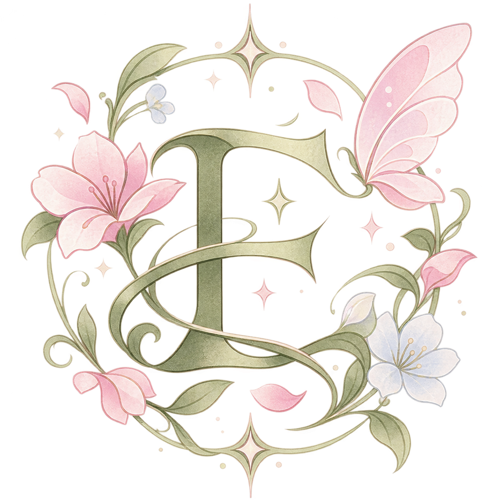
Elyndra, academia de artes mágicas y sabiduría feérica
Elyndra es una institución académica dedicada a la enseñanza, comprensión y desarrollo de las capacidades mágicas que las hadas conceden a aquellos con quienes establecen un vínculo familiar. Su propósito no se limita a enseñar a sus alumnos a utilizar la magia, sino también a transmitirles los conocimientos, tradiciones y valores necesarios para comprender a sus familiares feéricos y convivir con las particularidades que estos vínculos conllevan.
El acceso a la academia está ligado a la formación de un vínculo familiar con un hada. Aunque este puede establecerse a cualquier edad, los casos en los que sucede antes de los cinco o seis años son extremadamente raros. Se considera que establecer un vínculo durante los primeros años de vida puede resultar peligroso, ya que los niños todavía no cuentan con la madurez necesaria para comprender o manejar adecuadamente las capacidades que reciben.
A partir de esas edades, no existe una edad media ni un momento determinado en el que sea más probable que se produzca el vínculo. Se trata de un acontecimiento completamente impredecible, que puede tener lugar durante la infancia, la adolescencia o incluso en la edad adulta. Por este motivo, Elyndra adapta sus programas educativos a la edad y las necesidades de cada persona en el momento de establecer su vínculo familiar, procurando que todos reciban los conocimientos necesarios para comprender y utilizar adecuadamente sus nuevas capacidades.
Etapas académicas
La formación en Elyndra se divide en cuatro grandes etapas académicas, cada una con sus propios objetivos y programas de estudio. Cada curso cuenta con clases organizadas por edades, de manera que los contenidos y la dificultad de las enseñanzas se ajusten al desarrollo de sus alumnos.
- Educación primordial (5-12 años). Durante los
primeros
años,
los alumnos todavía son demasiado jóvenes para explotar plenamente las
capacidades
que
sus familiares feéricos les proporcionan. Por ello, esta etapa se centra
principalmente
en sentar las bases de su formación.
Las clases comprenden el aprendizaje de las tradiciones, la historia y las particularidades del mundo feérico, así como los conocimientos fundamentales para comprender la naturaleza de su vínculo familiar. También se les enseña a reconocer, controlar y manejar sus habilidades mágicas, procurando que su utilización quede limitada a tareas sencillas y cotidianas siempre que la naturaleza de sus capacidades lo permita.
Mover un objeto de un extremo de la habitación a otro, retirar el polvo de una superficie o ayudar con las tareas domésticas son algunos ejemplos de los usos prácticos que pueden llegar a desarrollar durante estos años.
- Educación mística (13-16 años). Al alcanzar la
adolescencia, se considera que los alumnos han adquirido la madurez suficiente
para
comenzar a desarrollar sus capacidades mágicas con mayor libertad. Durante esta
etapa,
el aprendizaje deja de centrarse exclusivamente en el control básico y comienza
a
profundizar en las distintas aplicaciones de las habilidades proporcionadas por
sus
familiares.
Los estudiantes empiezan a utilizar sus capacidades con mayor normalidad y, en determinadas circunstancias, incluso pueden ponerlas al servicio de la ciudadanía, siempre dentro de los límites establecidos para su formación.
Aquellos que hayan establecido su vínculo familiar a partir de estas edades deberán cursar, además, las materias introductorias correspondientes. Estas incluyen los conocimientos sobre historia, tradiciones y otros aspectos fundamentales del mundo feérico que se imparten habitualmente durante la etapa de iniciación.
- Educación taumatúrgica (17-18 años). Esta es la
última
etapa de la formación académica obligatoria en Elyndra. Durante estos dos años,
los
alumnos profundizan en el dominio de sus capacidades y aprenden a utilizarlas en
prácticamente todas sus aplicaciones cotidianas.
Se espera que, al finalizar esta etapa, cada estudiante disponga de los conocimientos y la destreza necesarios para desenvolverse de manera autónoma con las habilidades que su familiar le proporciona.
Al igual que sucede en las etapas anteriores, quienes hayan establecido su vínculo familiar más tardíamente deberán recibir aquellas enseñanzas previas que se consideren indispensables para completar su formación.
- Estudios áurea (19-22 años). Una vez
finalizada
la formación obligatoria, los alumnos pueden abandonar la academia o continuar
sus
estudios mediante programas de educación superior.
Esta etapa no es obligatoria y está especialmente destinada a quienes desean desarrollar una actividad profesional que implique el uso directo de sus capacidades mágicas. Para ello, los estudiantes deben escoger una especialización acorde con el ámbito laboral al que desean dedicarse y completar los años de formación correspondientes.
No obstante, el acceso a estos estudios requiere haber adquirido previamente los conocimientos fundamentales impartidos durante las etapas anteriores. Una vez completada la formación superior y obtenida la correspondiente graduación, los alumnos estarán capacitados para solicitar puestos de trabajo en los que se requiera el uso profesional de sus habilidades mágicas.
Formación para adultos
Aunque la estructura académica ordinaria de Elyndra comprende edades de entre cinco y veintidós años, la academia también contempla a aquellas personas que establecen su vínculo familiar una vez superada esta edad.
En estos casos, los adultos pueden acceder a cursos básicos impartidos por la propia institución, cuyo propósito es proporcionarles los conocimientos necesarios para comprender sus nuevas capacidades, aprender a controlarlas y utilizarlas de manera adecuada y responsable.
De este modo, independientemente de la edad a la que se produzca el vínculo familiar, cualquier persona puede recibir la orientación necesaria para convivir con las habilidades que su hada le ha concedido.
Vida académica y residencias
Elyndra no es únicamente un centro de enseñanza, sino también un espacio en el que sus alumnos pueden desarrollar su vida académica y personal.
A partir de los trece años, coincidiendo con el comienzo de la etapa de Formación Feérica, los estudiantes tienen la posibilidad de solicitar una plaza en las residencias de la academia. Estas instalaciones permiten alojarse en el propio recinto escolar y convivir con otros alumnos durante el transcurso del curso académico.
Esta posibilidad no está disponible para los estudiantes más pequeños. Elyndra considera que, durante los primeros años de infancia, es importante que los niños reciban una crianza familiar y mantengan una convivencia continuada con sus padres o tutores. Por este motivo, los alumnos menores de trece años deben continuar viviendo en sus respectivos hogares.
Tipos de hadas
Aunque existen numerosas variedades de hadas en el mundo, no todas pueden establecer un vínculo familiar con un efímero. Esta capacidad está reservada a dos razas concretas: las Aelthas y las Néminas, que se diferencian tanto por su apariencia como por la forma en la que comparten su magia con aquellos a quienes eligen como familia.
Aelthas
Las Aelthas son hadas de aspecto estilizado y elegante, generalmente de mayor tamaño y con una capacidad mágica más desarrollada. Su particularidad reside en que pueden transferir una parte de su propia magia al efímero con el que establecen un vínculo familiar.
Gracias a esta transferencia, el vinculante puede acceder a las capacidades mágicas del hada y utilizarlas a voluntad, siempre dentro de las posibilidades que estas le concedan. De este modo, la magia del Aeltha pasa a formar parte de las herramientas de su efímero, que puede aprender a dominarla y aplicarla en distintas situaciones.
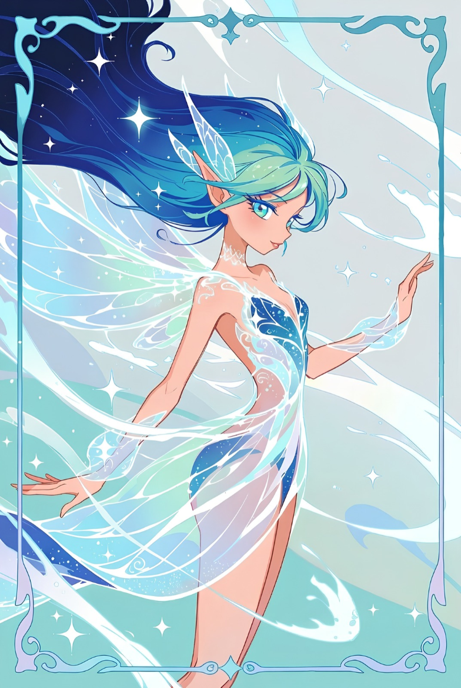
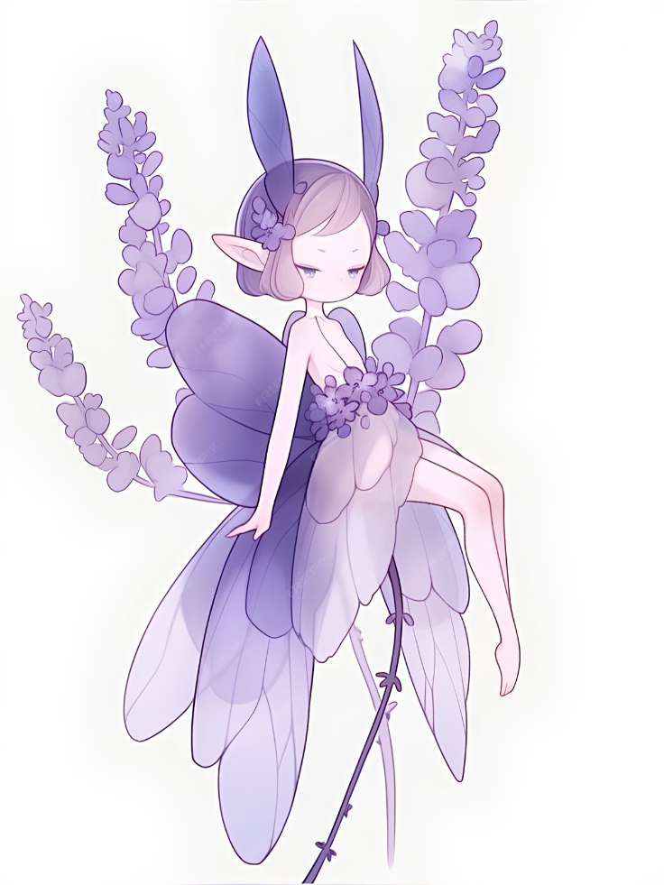
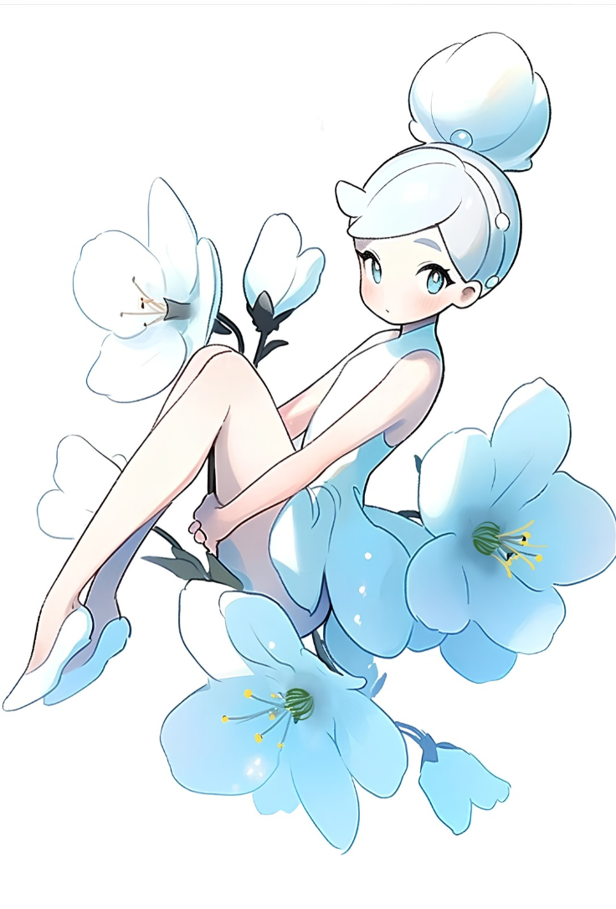
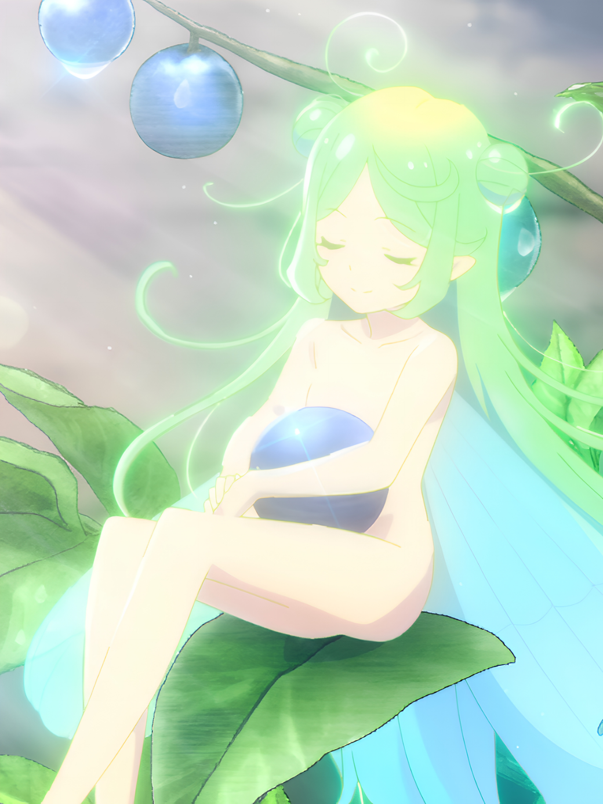
Néminas
Las Néminas, por su parte, son hadas mucho más pequeñas y de apariencia adorable. A diferencia de las Aelthas, no pueden transferir su magia a los efímeros con los que establecen un vínculo, por lo que estos no tienen la posibilidad de utilizar sus capacidades directamente.
Sin embargo, eso no significa que su magia sea menos útil. Cuando existe una buena relación entre ambos, las Néminas suelen emplear sus propias habilidades para ayudar a su familia, ofreciendo pequeños favores o interviniendo por iniciativa propia cuando consideran que pueden ser de utilidad.
Así, mientras que las Aelthas permiten que sus efímeros hagan uso de parte de su magia, las Néminas prefieren ponerla al servicio de estos por voluntad propia.
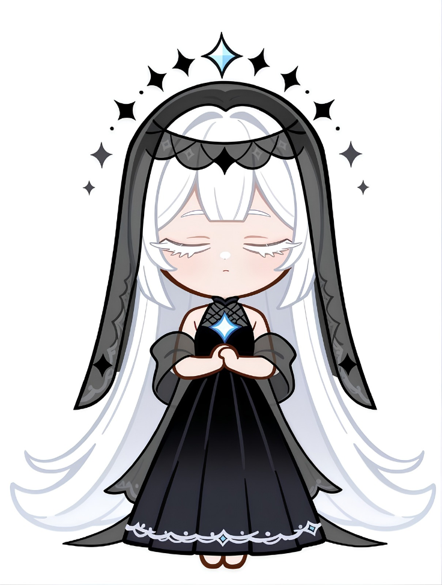
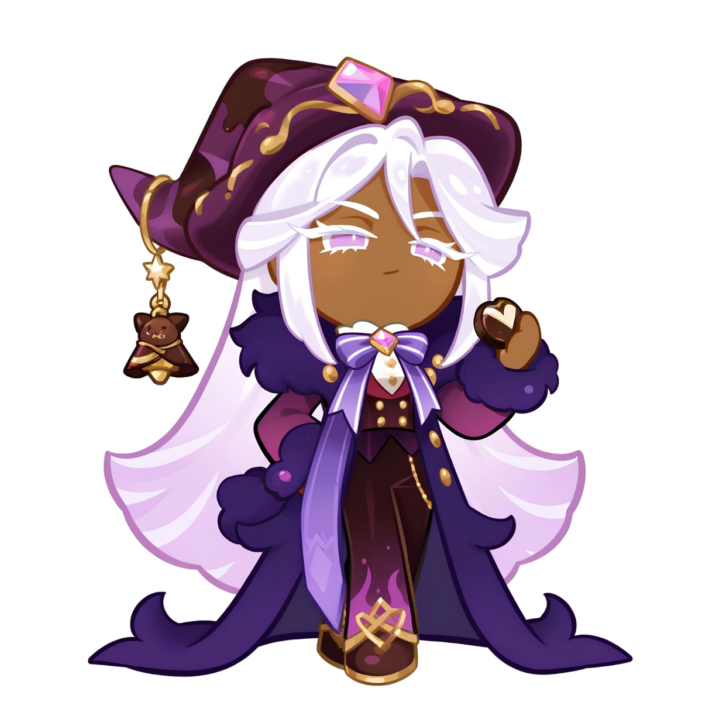
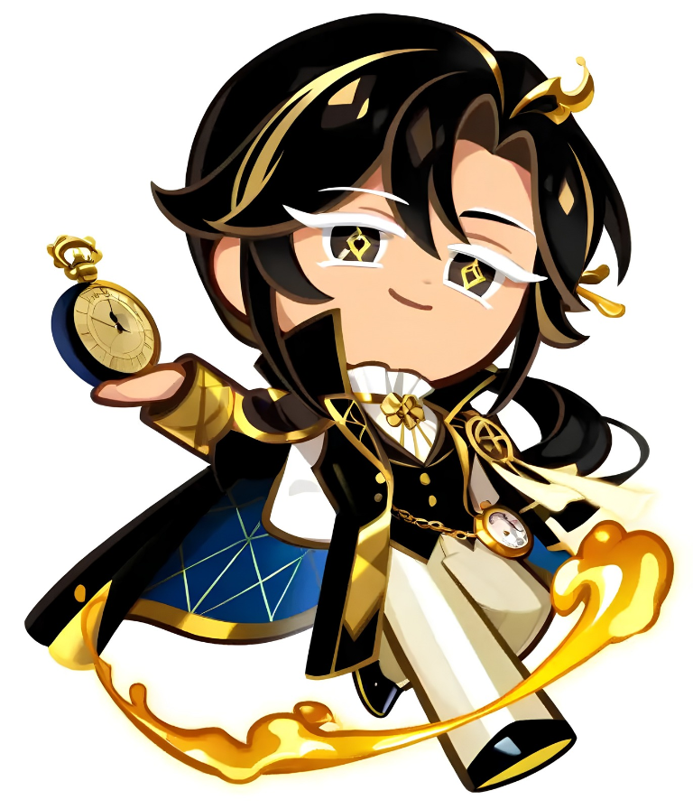
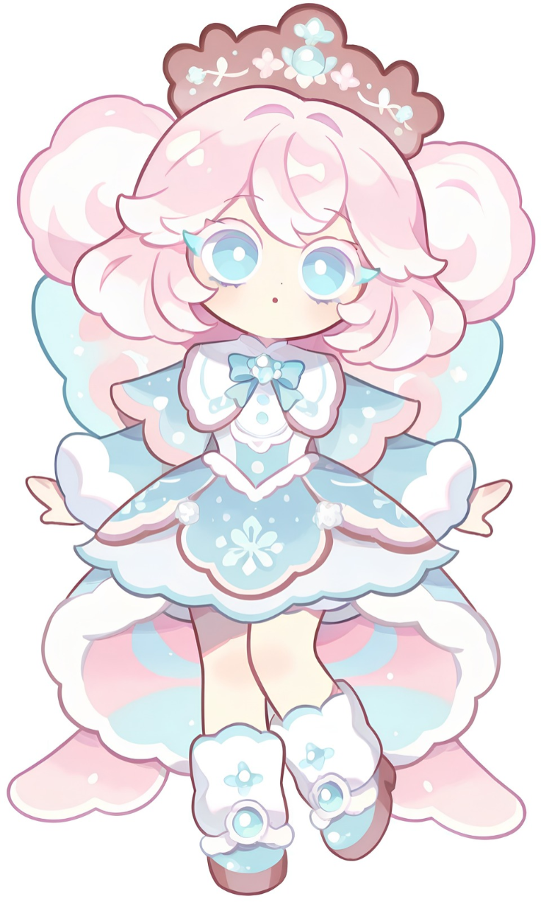
¿Cómo se crea un vínculo familiar?
El origen de un vínculo familiar suele remontarse al propio nacimiento de un hada. Estos seres nacen cuando uno o varios efímeros dirigen su mirada hacia un mismo objeto, planta u otro elemento, depositando en él sus deseos, felicidad y alegría. Cuando esa acumulación de sentimientos alcanza la energía necesaria, el elemento se transforma y da lugar al nacimiento de un hada.
Es precisamente en ese momento cuando suele establecerse el primer vínculo familiar. Por lo general, el hada forma un lazo con el efímero cuya mirada propició su nacimiento, y este vínculo puede acompañarlos durante toda la vida de su vinculante. Sin embargo, no siempre sucede así. Al igual que los efímeros, las hadas pueden tener sus propias preferencias y necesidades, por lo que es posible que no consideren que la persona que presenció su nacimiento sea la más adecuada para formar una familia. Del mismo modo, el efímero puede sentir que aquella hada no es la compañera que desea.
Esto significa que un hada no está obligada a vincularse con quien presenció su nacimiento. Si nace sin establecer un vínculo, o si pierde al efímero con el que estaba vinculada, puede formar uno nuevo con otra persona en cualquier momento. Incluso puede suceder de manera espontánea, por ejemplo, al encontrarse con un efímero que simplemente camina por la calle y con quien siente que existe una conexión especial.
El vínculo y la pérdida
Los vínculos familiares suelen mantenerse durante toda la vida del efímero. Cuando este fallece, el lazo se rompe y el hada queda libre para establecer uno nuevo si así lo desea.
No obstante, esto no significa que la pérdida carezca de consecuencias. Las hadas suelen atravesar un periodo de luto tras el fallecimiento de su vinculante, ya que el vínculo familiar representa una unión importante para ellas. La duración y la forma en que viven ese duelo pueden variar de un hada a otra.
¿Cuántas hadas pueden formar un vínculo con un efímero?
No existe ninguna restricción sobre la cantidad de vínculos familiares que puede establecer un efímero. Una misma persona puede formar una familia con varias hadas, independientemente de que pertenezcan a la misma raza o a razas distintas.
Aun así, lo habitual es que un efímero no tenga más de dos vínculos familiares a lo largo de su vida. Esto no responde a ninguna limitación mágica, sino que es simplemente la situación más frecuente.
El mundo de los efímeros
El mundo de los efímeros conserva un carácter predominantemente rural. Los pequeños pueblos y las comunidades dispersas son mucho más habituales que las grandes ciudades, de las cuales apenas existen unas pocas en todo el reino. La mayoría de los efímeros prefiere vivir en lugares donde los vecinos se conocen entre sí y mantienen relaciones cercanas, en lugar de asentarse en grandes núcleos urbanos.
Las ciudades, por su parte, suelen concentrar a los grandes comerciantes, las figuras políticas y otras personas cuyas ocupaciones resultan esenciales para la prosperidad y el funcionamiento del reino. También son el lugar de residencia de las familias nobles, aunque estas no son especialmente numerosas.
Una sociedad para dos
Con el paso del tiempo, la convivencia entre efímeros y hadas se ha convertido en algo completamente integrado en la sociedad. Su presencia ya no se limita al ámbito familiar, sino que también ha influido en la economía y en los servicios disponibles.
De hecho, han surgido numerosos establecimientos dedicados exclusivamente a las necesidades de las hadas, como tiendas de ropa, alimentación, peluquerías y otros comercios especializados. Estos negocios buscan proporcionarles una vida más cómoda y adaptada a sus características. Sus gastos suelen estar cubiertos por el gobierno o la familia real, de manera que los efímeros no tengan que asumir por sí solos el coste de los cuidados y productos destinados a sus familiares.
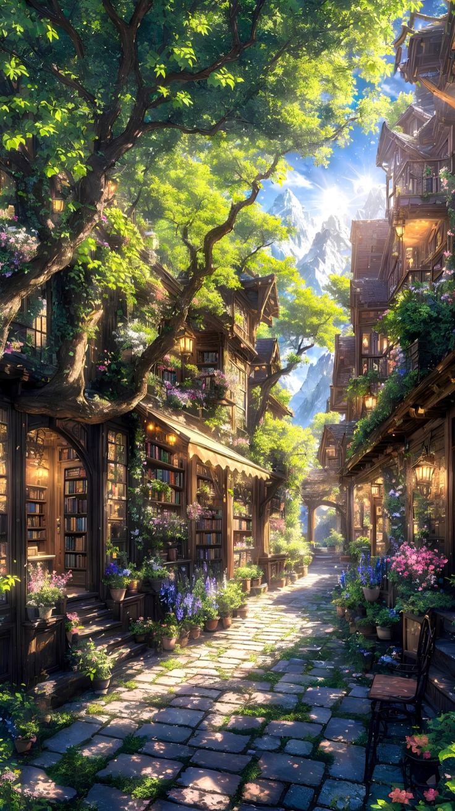
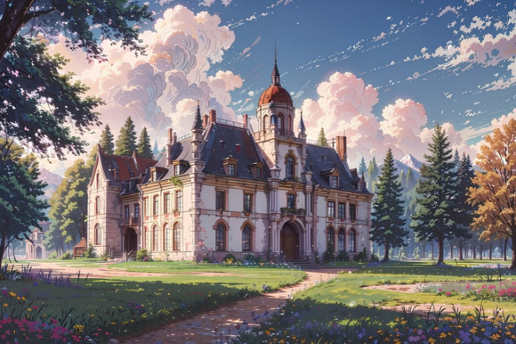
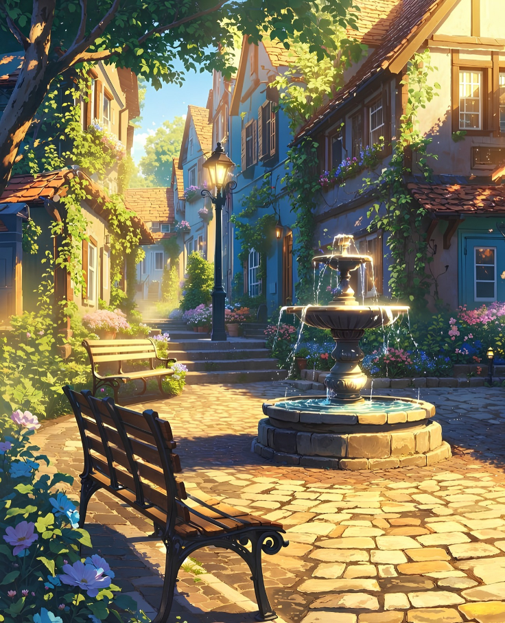
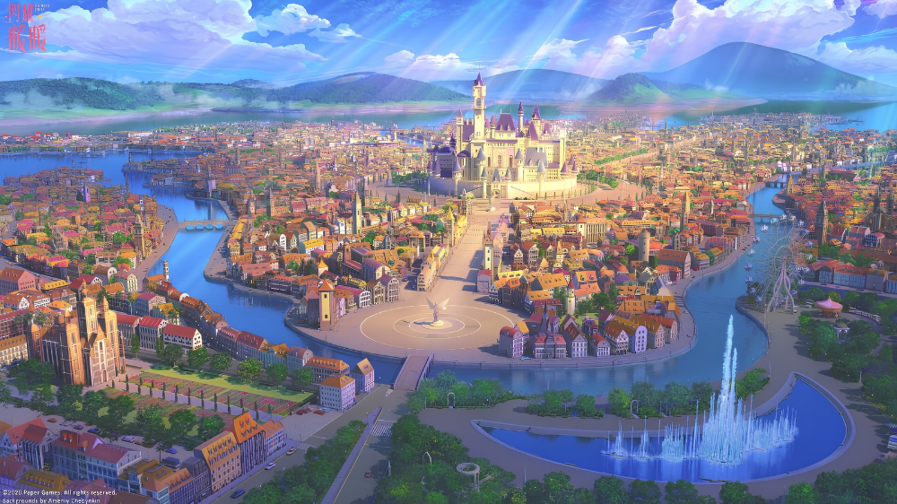
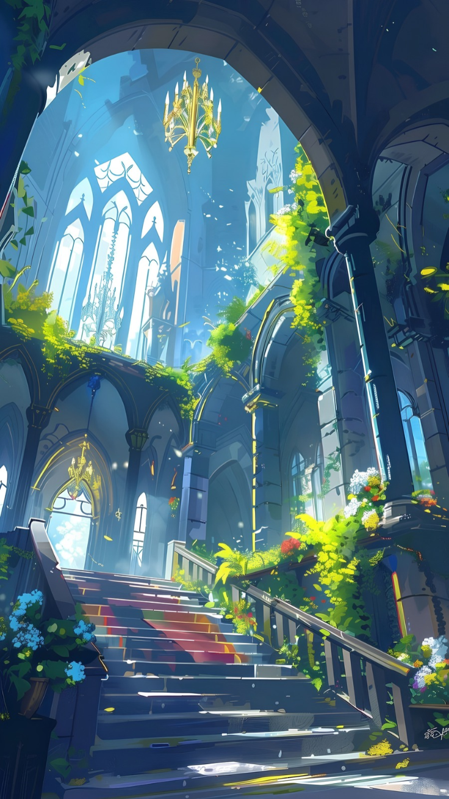
Los avances de la magia
La influencia de las hadas también ha contribuido considerablemente al desarrollo de la tecnología. Gracias a sus capacidades mágicas, los efímeros han conseguido crear inventos que facilitan la vida cotidiana y permiten conectar comunidades que, de otro modo, permanecerían bastante aisladas.
Así, aunque el mundo conserva una estética y una organización propias de una sociedad medieval, existen dispositivos que recuerdan a los teléfonos, medios de transporte similares a los trenes e incluso cámaras fotográficas. Todos ellos mantienen una apariencia acorde con la época y el entorno, pero incorporan detalles y mecanismos que delatan la intervención de la magia de las hadas en su creación.
En definitiva, se trata de un mundo donde la tradición y el progreso conviven de una manera particular: los avances no han surgido únicamente de la inventiva de los efímeros, sino también de la estrecha relación que mantienen con sus familiares mágicos.
La ubicación de Elyndra
A diferencia de los establecimientos y centros educativos habituales, Elyndra no se encuentra dentro de ninguna ciudad o pueblo. La academia permanece ligeramente apartada del resto de la sociedad, rodeada de naturaleza y alejada del bullicio de los núcleos habitados.
Esta ubicación no es casual. Al estar las hadas mucho más familiarizadas con los entornos naturales, se considera que un espacio de estas características resulta más adecuado para su convivencia y aprendizaje. De esta manera, Elyndra ofrece a sus alumnos un entorno donde efímeros y hadas pueden desarrollar sus capacidades y fortalecer sus vínculos en mayor contacto con la naturaleza.
En definitiva, se trata de un mundo donde la tradición y el progreso conviven de una manera particular: los avances no han surgido únicamente de la inventiva de los efímeros, sino también de la estrecha relación que mantienen con sus familiares mágicos.
El mundo de las hadas
A pesar de la estrecha convivencia entre efímeros y hadas, lo cierto es que se conoce muy poco acerca del mundo del que estas últimas proceden. Buena parte de su cultura, sus costumbres y su organización permanece envuelta en un profundo secretismo, y parece que las propias hadas prefieren que siga siendo así.
Sus propias civilizaciones
Se sabe que las hadas cuentan con sus propias civilizaciones y pequeñas ciudades, aunque estas permanecen ocultas y alejadas de la mirada de los efímeros. Hasta la fecha, no existe ningún registro conocido de una persona que haya tenido la oportunidad de contemplar una de estas ciudades o visitarla por invitación de un hada.
Tampoco se conoce demasiado acerca de cómo se organizan, cómo son sus comunidades o qué aspecto tienen los lugares en los que habitan. Cualquier información al respecto procede de pequeños detalles y comentarios que las hadas han dejado escapar a lo largo de su convivencia con los efímeros.
Sus festividades
Otro aspecto que se conoce de su cultura es que las hadas celebran sus propias festividades. Sin embargo, la única cuya existencia ha llegado a ser de conocimiento común tiene lugar durante la primera semana de primavera.
Cuando llega ese momento, las hadas regresan a sus respectivas ciudades para participar en una celebración cuyo propósito y actividades se desconocen por completo. Durante esos días, su presencia entre los efímeros disminuye considerablemente y, una vez finalizada la semana, regresan a sus hogares habituales.
En ocasiones, vuelven acompañadas de pequeños obsequios procedentes de la naturaleza, como flores cuya esperanza de vida es mucho mayor de lo habitual, retoños de árboles capaces de producir frutos de una calidad extraordinaria u otros detalles de características igualmente singulares. Se desconoce si estos regalos forman parte de la propia festividad o si simplemente son recuerdos que las hadas deciden traer consigo.
Familias entre hadas
Aunque las hadas nacen a partir de las miradas y los sentimientos de los efímeros, existen indicios de que también cuentan con familias consanguíneas entre ellas. Es decir, parece que algunas hadas mantienen relaciones de parentesco que no están relacionadas con el nacimiento mágico que da origen a su especie.
No obstante, nunca han explicado cómo funcionan estas relaciones ni de qué manera se forman dichas familias. De hecho, preguntar directamente sobre este asunto suele considerarse una falta de educación, por lo que la mayoría de los efímeros ha aprendido a no insistir en ello.
El secretismo de las hadas
En general, parece que el hermetismo que rodea al mundo de las hadas no es casualidad. Aunque poseen capacidades mágicas de las que los efímeros carecen, existe una diferencia importante entre ambos: en términos de fuerza física, los efímeros suelen superar a las hadas.
Por este motivo, se cree que mantener en secreto determinados aspectos de su sociedad, sus costumbres y su organización es una forma de protegerse. Revelar demasiada información sobre su mundo podría situarlas en una posición de desventaja frente a los efímeros, algo que, aparentemente, prefieren evitar.
Así, aunque las hadas forman parte del día a día de la sociedad, su verdadero mundo continúa siendo un misterio incluso para aquellos con quienes comparten una vida entera.
¿Cómo nació Elyndra?
Desde que tengo memoria, siempre he sentido una especial pasión por el anime, especialmente por aquellas historias que giraban en torno al romance, las chicas mágicas y las criaturas fantásticas.
Con el paso de los años, fui descubriendo cada vez más historias en las que los humanos convivían con hadas que los acompañaban como familiares, compartiendo con ellos sus vidas y sus capacidades mágicas. Poco a poco, todas esas ideas fueron despertando en mí las ganas de crear algo propio.
Y, en algún momento, surgió la idea de una escuela dedicada a enseñar a sus alumnos a comprender y utilizar correctamente las habilidades mágicas de sus hadas. Un lugar donde la convivencia entre ambos fuera el centro de todo y donde pudiera desarrollar historias, personajes y relaciones alrededor de esa premisa.
En cierto modo, creo que Elyndra es el resumen perfecto de todo aquello que le habría encantado descubrir a mi niña interior. Es una forma de dar vida a ese pequeño universo que, durante tantos años, habría disfrutado viendo en una de aquellas historias que tanto me gustaban.
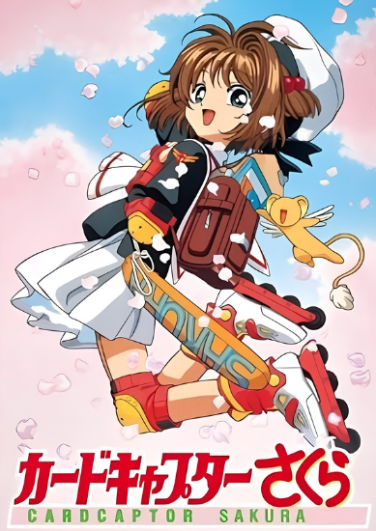
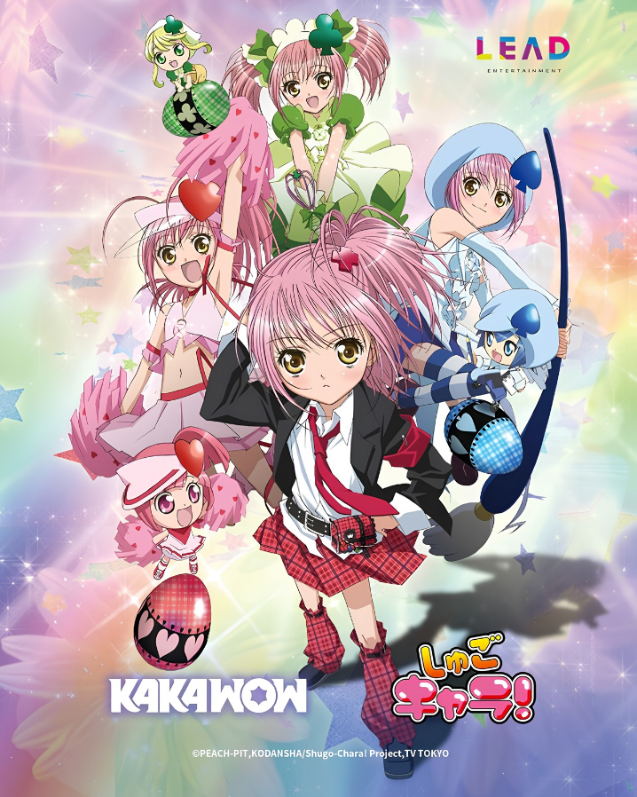
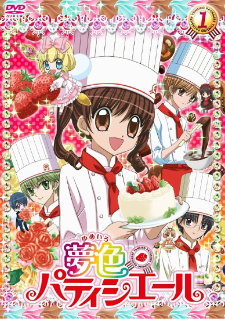
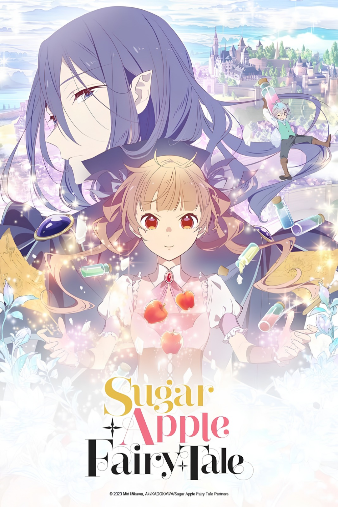
¿Por qué le he dado forma?
Si hay algo que me caracteriza, y que quienes me conocen bien saben de sobra, es que se me ocurren ideas nuevas para roles, historias y proyectos de todo tipo cada dos por tres.
Por motivos bastante evidentes, el tiempo no me permite darles forma a todas al mismo tiempo. Sin embargo, eso no significa que desaparezcan. Muchas se quedan en un segundo plano, esperando su momento, mientras yo sigo hablando de ellas y compartiéndolas con quienes me rodean. Porque, si hay algo que disfruto especialmente de crear universos e historias, es precisamente el proceso de compartirlos con otras personas.
¿Tenía previsto darle más forma a Elyndra ahora mismo? La verdad es que no. Pero, como me lo habéis pedido y al final este proyecto servirá para que más personas, además de mi grupo de amigos más cercano, puedan disfrutar de él, he decidido dedicarle parte de mi tiempo y convertir esas primeras ideas en algo un poquito más tangible.
Y quién sabe... quizá cuando menos me dé cuenta, ya esté preparando otra campaña. ¡Que, conociéndome, tampoco sería ninguna sorpresa!
¿Habrá más contenido en diferentes plataformas?
Nadie me ha hecho esta pregunta todavía, pero conozco bastante bien a las personas que juegan en mis mundos y no me extrañaría que alguna ya se estuviera preguntando si habrá contenido adicional en otras plataformas.
Por ahora, no tengo previsto ampliar Elyndra con contenido para plataformas como Ko-fi, YouTube o Twitch. Mi intención es centrarme en dar forma al proyecto actual, sin comprometerme con formatos o publicaciones que quizá no encajen con lo que me apetezca crear en cada momento.
Eso no significa que descarte la posibilidad. Al final, me guío bastante por aquello que más ganas me genera hacer. Si algún día me apetece escribir un relato ambientado en Elyndra, preparar algún contenido adicional o explorar otro formato, sencillamente lo haré.
Así que, por ahora, no hay planes concretos, ¡pero tampoco promesas de que vaya a quedarme quietecita!
¿Puedo participar en alguna de tus campañas o one-shots?
Pues mira, este no es el apartado en el que te doy un "sí" directo, porque si soy sincera, me cuesta mucho aceptar a nuevos integrantes en mi mesa, pero no quiero cerrarme puertas, tal vez alguien ahí fuera sienta curiosidad por conocer más sobre lo que ofrezco.
Es ahora cuando vuelvo a repetirme: ¿quieres postularte para ser parte de mi mesa? Entonces, ahora si que sí, escríbeme por correo electrónico.
Ahora me pongo un poquitín más seria, porque si alguien es parte de mi mesa, exijo ciertas condiciones:
- Ser una persona respetuosa, tanto conmigo como con el resto de integrantes de la mesa.
- Ser una persona comprometida, es decir, que se comprometa a asistir a las partidas y a avisar con antelación si no va a poder asistir.
- Ser una persona "estudiosa", las tramas elaboradas no se resuelven sentándote en una silla el día de la partida y luego olvidándote de todo hasta la próxima sesión. Si eres parte de esto, lo menos que puedes hacer para respetar mi trabajo, es dedicar tiempo a prepararte y participar activamente.
Si, por el motivo que sea, cualquiera de esas tres cosas te parece demasiado, entonces ten claro que mi respuesta a tu propuesta de unión será un rotundo "no". Si yo me involucro todo cuanto puedo, espero lo mismo del resto de participantes. Una historia no la monto solo yo, la construimos juntos.
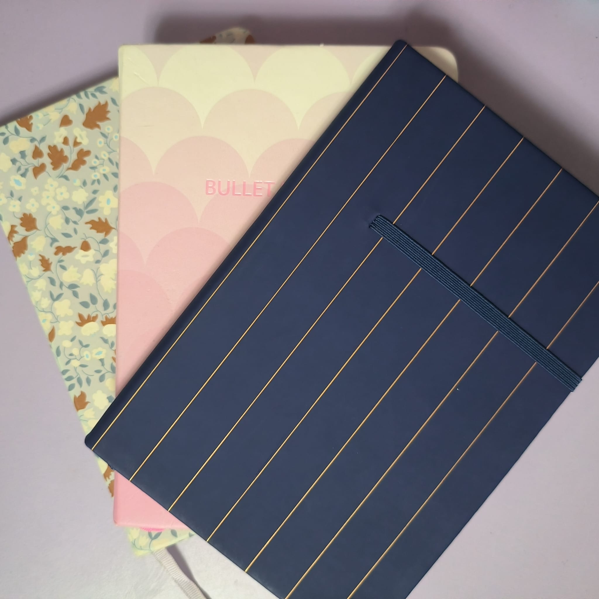